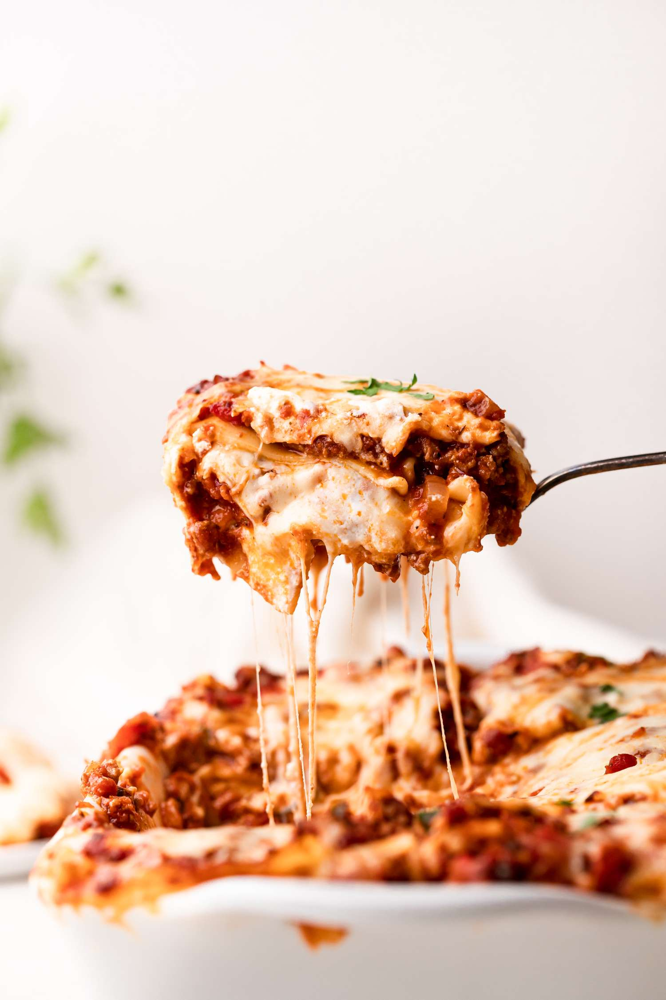

Lasagna Recipe
Homepage

The Secret Behind This Classic Lasagna Recipe
Ingredients
- 2 teaspoons extra virgin olive oil
- 1 pound ground beef chuck
- 1/2 medium onion, diced (about 3/4 cup)
- 1 pinch garlic powder and/or garlic salt
- 1 tablespoon red or white wine vinegar
- 1 tablespoon to 1/4 cup sugar (to taste, optional)
- Salt
Steps
- Put a large pot of salted water (1 tablespoon of salt for every 2 quarts of water) on the stovetop on high heat. It can take a while for a large pot of water to come to a boil (this will be your pasta water), so prepare the sauce in the next steps while the water is heating.
- In a large skillet heat 2 teaspoons of olive oil on medium-high heat. Add the ground beef and cook until it is lightly browned on all sides.
- Add the diced bell pepper and onions to the skillet (in the photo we are using yellow bell pepper and red onions).